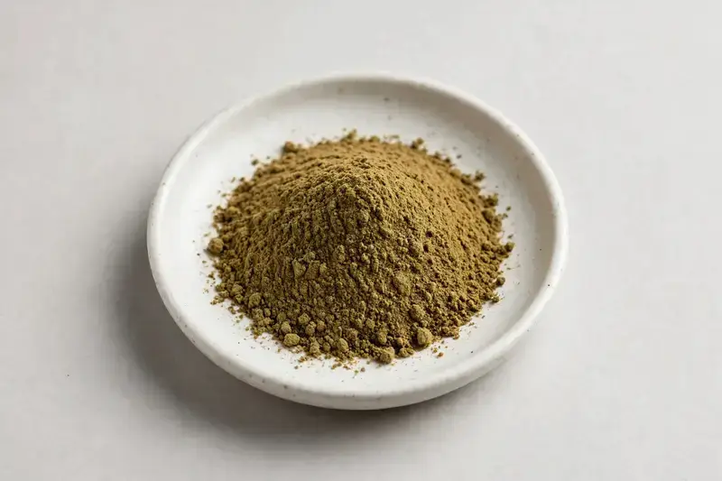

Trifolium pratense — red clover flower extract, commonly requested at 8-40% isoflavones, for women's-health formulations.

Overview
Red clover extract is produced from the flower of Trifolium pratense and is valued for its isoflavone content in supplement formats. It is a recurring inquiry from brands building women's-health ranges, frequently combined with other botanical actives. As a Xi'an-based trading company, we source through vetted partner producers and align each order to the buyer's stated isoflavone grade and documentation targets.
Specifications below reflect commonly requested options in the market — not a stock list. Share your target spec and we'll confirm exactly what we can supply, honestly.
| Specification | Details |
|---|---|
| Botanical identity | Trifolium pratense flower extract powder |
| Marker compound | Commonly requested spec grades: total isoflavones 8%, 20% and 40% by HPLC — isoflavone profile and assay method agreed per buyer specification. |
| Appearance | Fine powder, color typical of the extract |
| Mesh size | Typically 80–100 mesh (confirm per inquiry) |
| Testing | COA/TDS arranged on request; scope agreed per your spec |
Applications
Documentation
We don't claim in-house labs or certifications we don't hold. COA and TDS documents can be arranged on request, and testing scope is agreed against your specification before supply.
FAQ
Related products
Morus alba
Key marker: DNJ 1%
View specs →Citrus aurantium
Key marker: Synephrine 6-10%
View specs →Sodium hyaluronate (fermentation-derived)
Key marker: Cosmetic & food grades
View specs →Dihydroberberine
Key marker: 98%+ HPLC
View specs →Kigelia africana
Key marker: Flavonoid / ratio grades
View specs →Send your target spec and volumes — we'll respond with a tailored quotation.
Request a Quote